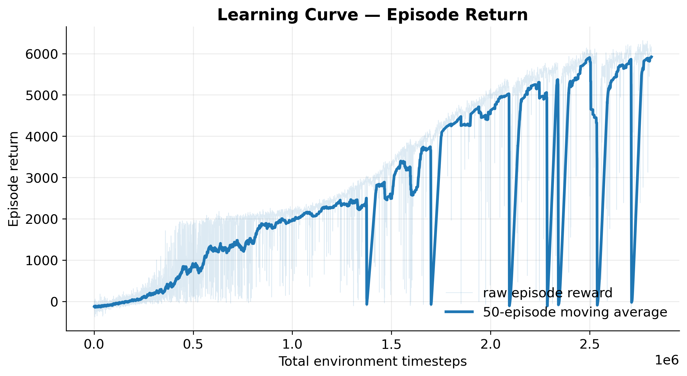
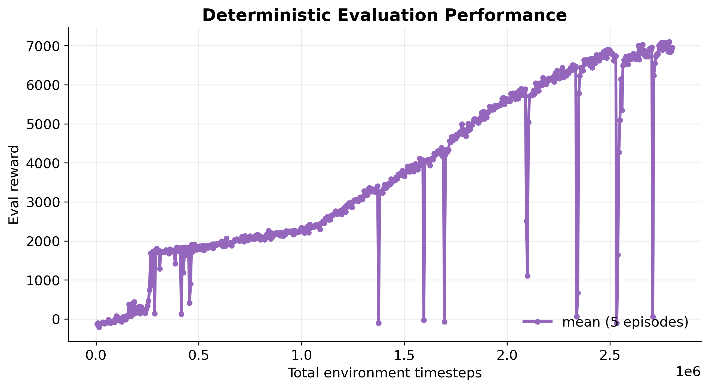
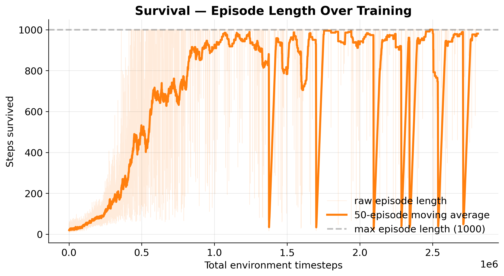
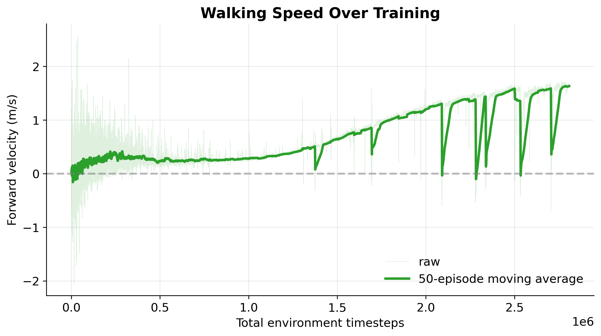
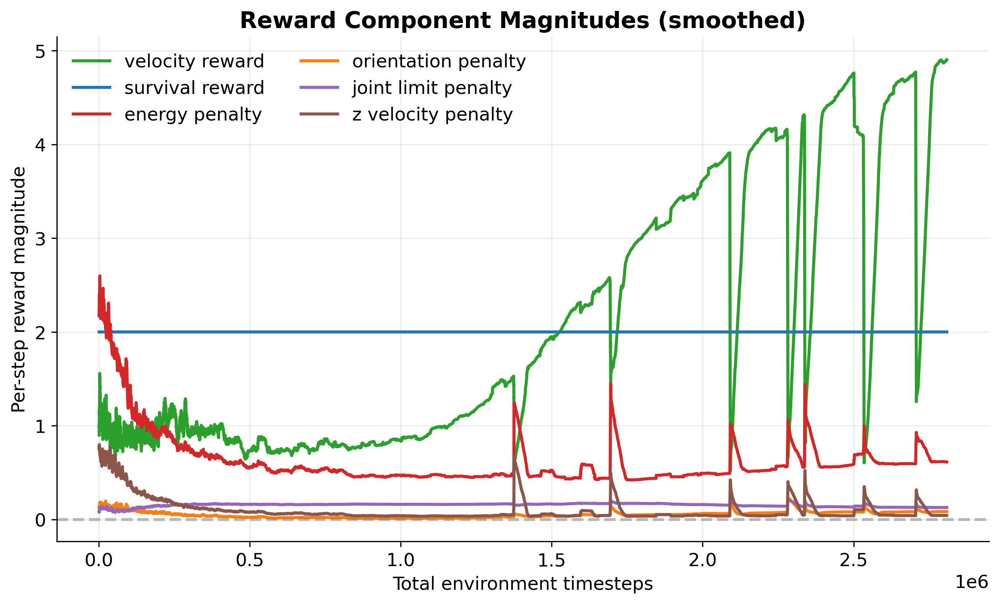
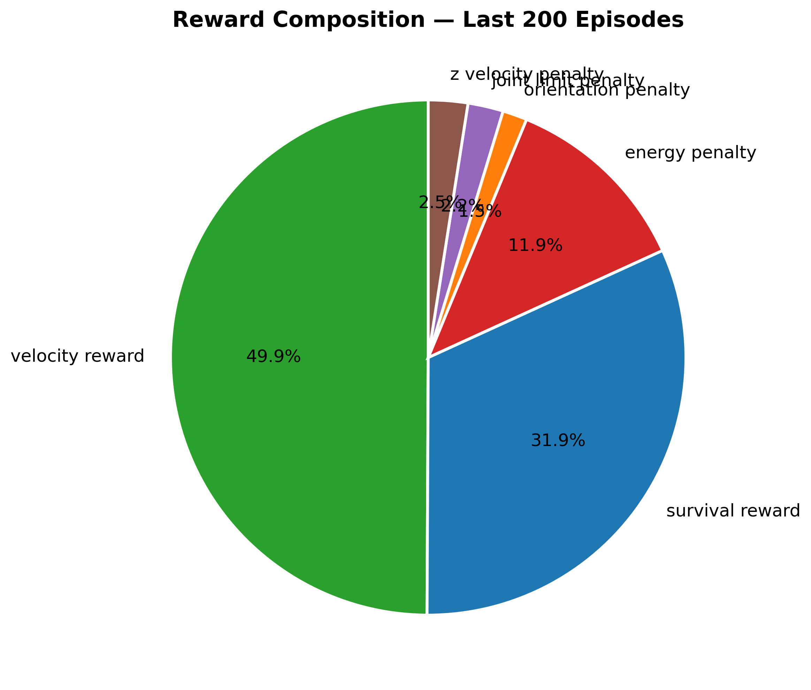
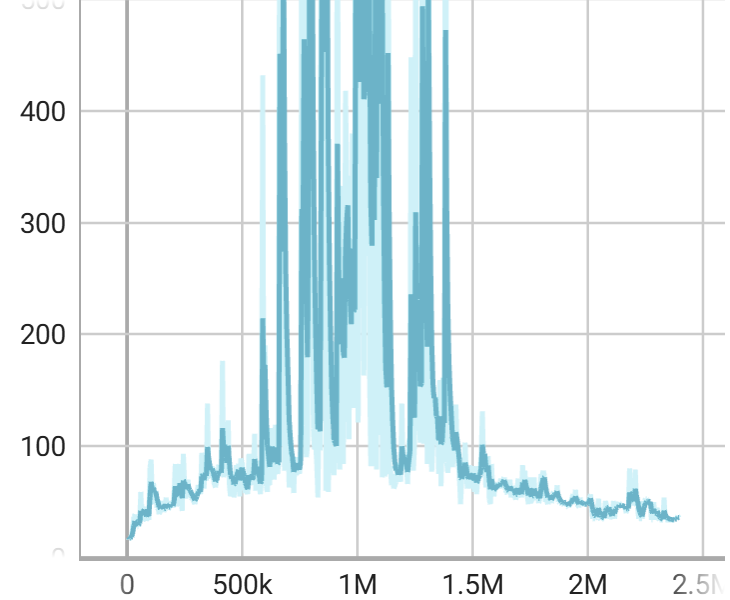
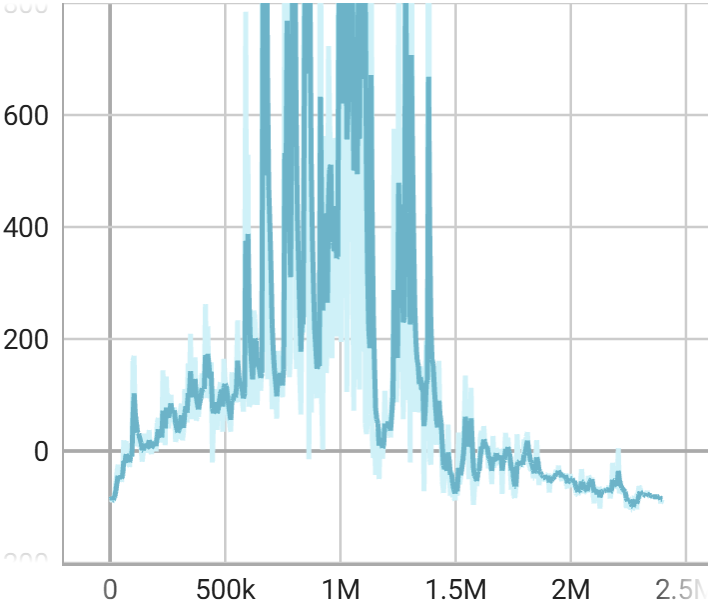
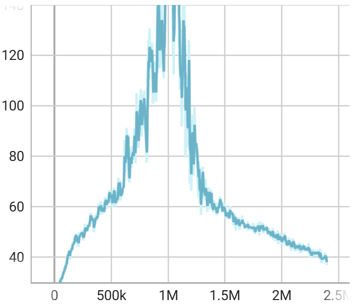
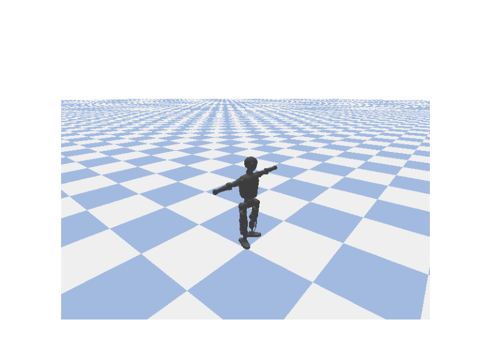

Abstract
We train a 13-degree-of-freedom bipedal humanoid (Booster Robotics T1) to walk forward in a PyBullet simulation using two model-free reinforcement-learning algorithms: Soft Actor–Critic (SAC) and Proximal Policy Optimization (PPO). The policy is a two-layer MLP that maps proprioceptive observations to per-joint position targets, and a hand-shaped reward combines forward velocity, an alive bonus, an energy cost, and several stability penalties.
After roughly 2.8M environment steps the SAC policy reaches a mean evaluation return of about 7,100 and a forward speed of ~1.6 m/s. PPO under several reward variants plateaus near a return of 3,000 and never produces a sustained gait. We discuss the reward-shaping decisions that drove these results, the catastrophic-forgetting failures we saw with SAC late in training, and the practical trade-offs between on- and off-policy methods on a dense-reward locomotion task.
Problem
Bipedal walking is high-dimensional, underactuated, and unstable in its natural rest state — small mistakes early in a step cascade into a fall. Classical zero-moment-point and model-predictive controllers work well when the dynamics model is accurate, but they require significant tuning and do not generalize easily. We study whether two off-the-shelf deep-RL algorithms can learn a stable forward gait from scratch on the T1 humanoid using only proprioceptive state and a dense, hand-shaped reward, and we compare them on sample efficiency, wall-clock training time, final performance, and stability of the learned policy.
Method
Robot & simulator
The Booster Robotics T1 is a 1.2 m, 23-joint humanoid loaded into PyBullet via URDF. Physics runs at 240 Hz, the policy at 60 Hz. Head joints are locked and arm joints are held at zero with a stiff position controller, leaving 13 actuated joints (waist + 6 per leg) under policy control. Episodes terminate if the torso drops below 0.35 m, rises above 2 m, or tilts more than ~70°.
Observation & action
- Observation (36-D): torso height, Euler orientation, linear and angular velocity, plus 13 joint positions and 13 joint velocities.
- Action (13-D): normalized joint targets in [−1, 1], applied via PD position control. Ankles use softer/more damped gains to suppress foot-chatter.
Reward
r = 3.0 · v_x // forward velocity + 2.0 // alive bonus − 0.00495 · mean|τ · q̇| // energy − 0.5 · (roll² + pitch²) // upright − 0.2 · Σ max(|q_i|−0.5, 0)² // joint limits − 0.5 · max(−ż, 0) // anti-drop −100 on fall // terminal
Algorithms
We use the Stable-Baselines3 implementations of SAC and PPO with a shared [256, 256] MLP for actor and critic, γ = 0.99, and Adam at 3×10−4. SAC has a 1M-transition replay buffer, batch size 256, τ = 0.005, and auto-tuned entropy with target entropy −5. PPO uses 2,048 rollout steps, 10 SGD epochs, batch size 64, GAE λ = 0.95, clip range 0.2.
Results
SAC: from standing to walking
The SAC policy spends ~300k steps learning to stand, transitions into a walking phase between 1.0M and 2.0M steps, and plateaus around an episode return of 6,000. The deterministic evaluation curve is smoother and reaches ~7,100, indicating most training-curve variance comes from exploration noise.




Reward composition
Forward velocity dominates once standing is solved, with the alive bonus contributing a constant ~32% of return and the energy penalty about 12% — just enough to discourage the high-frequency leg-shimmy that smaller energy weights produced.


PPO: reward shaping for early gait formation
PPO did not converge to a fully sustained walking technique, but it showed clear behavioral progress across reward variations. Early policies learned to stand, survive, or make only small shuffle attempts, producing longer episodes without meaningful gait. Later reward variants reduced these stationary solutions and exposed more directional behaviors, including sideways drift, reverse-motion survival, and eventually the beginning of forward stepping.
Our strongest PPO result showed the start of a true gait pattern: a visible attempts at ankle and knee motions in a forward manner. The best PPO checkpoint reached about 1.15 m mean forward distance over a 1000-step evaluation, corresponding to an average forward speed of about 0.07 m/s.
Evaluation Episode Length

Evaluation Reward

Rollout Episode Length

Best PPO Gait Attempt

PPO vs. SAC
| PPO | SAC | |
|---|---|---|
| On / off policy | on | off |
| Steps trained | ~2.4M | ~2.8M |
| Best eval return | ~1,000 | ~7,100 |
| Best fwd speed | ~0.1 m/s | ~1.6 m/s |
| Throughput | ~300 sps | ~50 sps |
PPO never matched SAC on this task. It was much faster in wall-clock throughput, but its performance was highly sensitive to reward design. Across multiple reward variants, PPO repeatedly found partial solutions such as standing, shuffling, sideways drift, or reverse-motion survival before later runs began to show the first signs of real stepping. SAC ultimately learned the stronger final gait, while PPO exposed how reward shaping influenced model behavior.
Limitations
- Catastrophic forgetting. Long SAC runs are not monotonic; the policy occasionally collapses for a few episodes before the entropy controller pushes exploration back up.
- Unconventional gait. The policy converges to a knees-bent, ankle-pushing duck-walk — a legitimate local optimum of the reward, but not human-like. A periodic phase reward or motion-capture imitation term would likely fix this.
- Locked arms. Holding the arms at zero simplified training but removed a useful balance DoF.
- No hardware deployment. All numbers are simulation-only. Domain randomization is the natural next step.
Video
(Optional video deliverable.) Embed link will go here once recorded. The animated GIF at the top of the page shows the final SAC gait.
Citation
@misc{burcher2026t1walk,
title = {Bipedal Robotic Locomotion with Reinforcement Learning},
author = {Burcher, Drew and Torri, Dan and Wyatt, Nathan},
year = {2026},
note = {CS 5824 / ECE 5424 final project, Virginia Tech},
url = {https://github.com/DrewBurcher/ML_Humaniod}
}